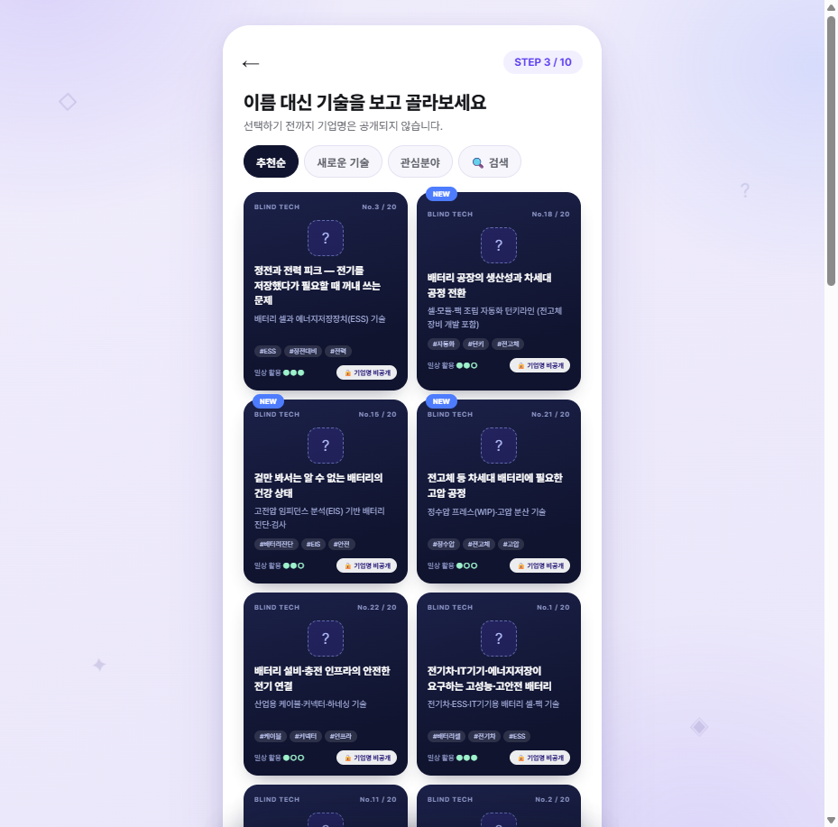
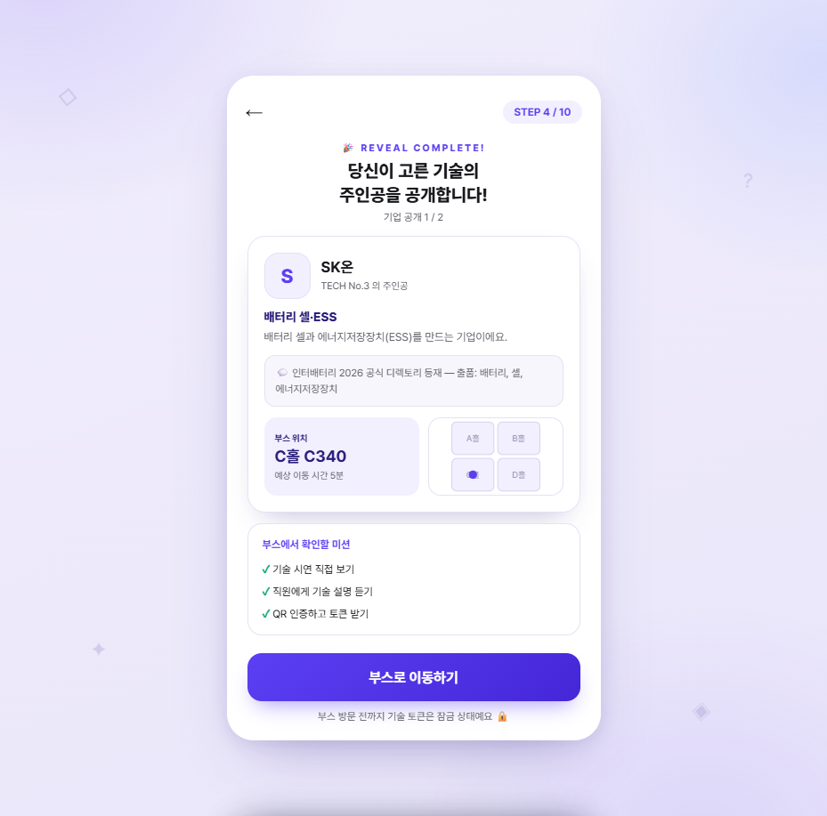
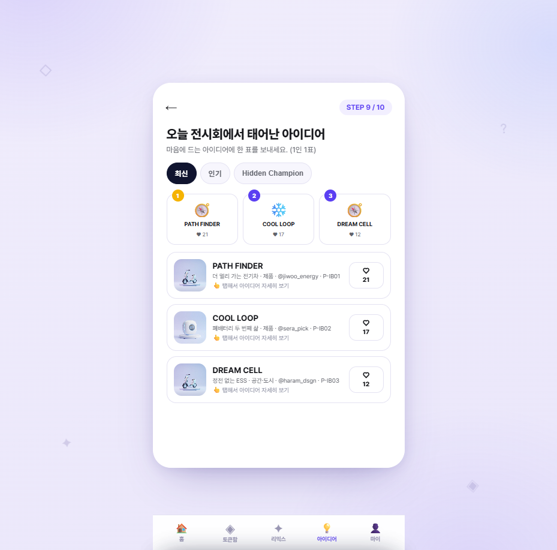
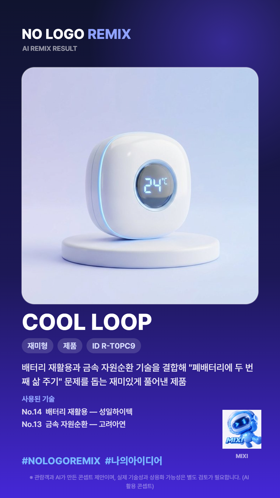
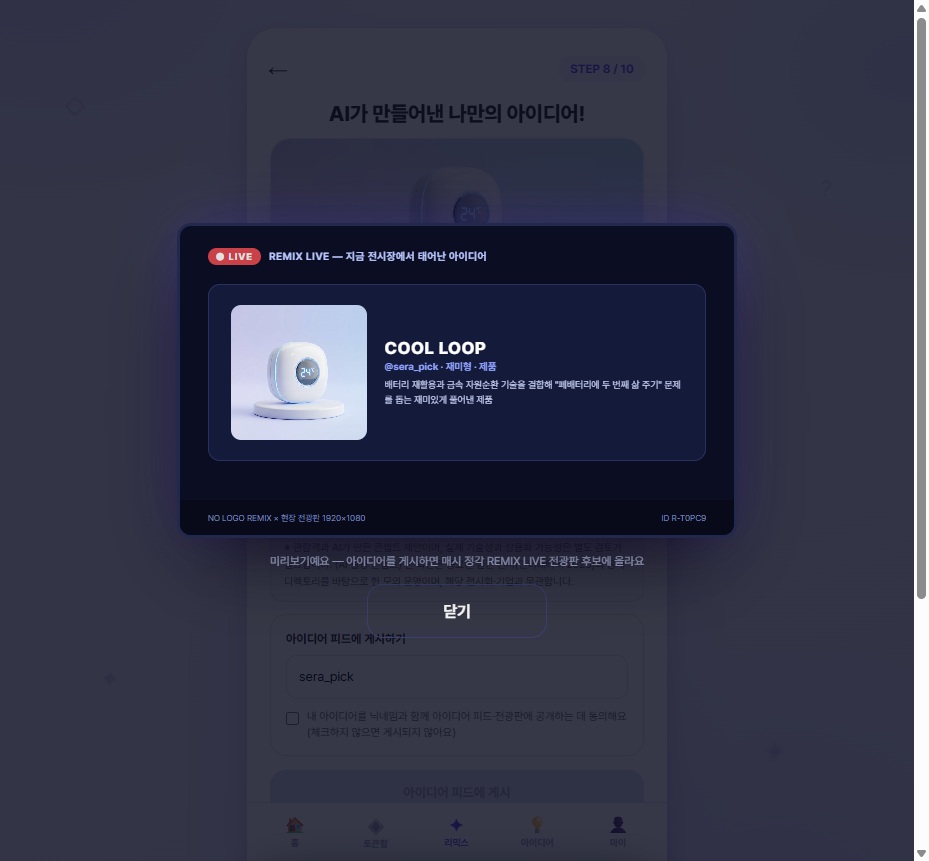

이번에는 가상 부스가 아닙니다. 이미 종료된 실존 전시회의 공식 참가기업 디렉토리 620개사를 분석하고, 그중 22개사의 공식 출품 정보로 블라인드 기술카드를 구성해, 서로 다른 관람객 페르소나 6인이 배포된 앱에서 전체 여정을 실제로 완주한 모의 운영 리포트입니다. 공개 정보 기반 시뮬레이션 · 해당 전시회·기업과 무관
조사 37건 중 25건은 출처 원문에 재접속해 문장 단위로 검증했고(표현이 부정확한 5건은 원문 기준으로 교정), 재검증하지 못한 항목은 아래에 별도 표시했습니다. 지어낸 수치와 확인 안 된 출처는 싣지 않았습니다.
출처: 한국전시산업진흥회 「2023년 전시산업통계조사 결과」(통계청 국가승인통계 제430001호) 원본 PDF 직접 확인 — akei.or.kr/data/business/2023_allnew1.pdf
참가기업은 "전시장 활동 계획 부재 → 측정할 성과 부재 → ROI 측정 곤란 → 참가에 대한 부정적 인식"의 악순환을 겪는다. 참가기업 대부분은 여건이 부족한 중소기업. 업계 조사기관(Explori·레이든)은 "주최자가 참가기업 성과를 측정해주는 서비스"와 "관람객-참가기업 상호작용의 데이터화"를 제언 — 지금 주최자에게 그 데이터 기반이 없다는 뜻입니다.
GMI 글로벌마이스인사이트 Vol.58 (2025.10)참관객이 하루에 방문하는 부스는 평균 26개(Freeman Research 집계), 76%는 방문할 부스를 미리 정하고 입장(Bizzabo 집계), 부스 앞에서 멈출지는 약 3초 만에 결정(Exhibit Surveys 집계). 인터랙티브 요소가 있는 부스는 정적 부스보다 체류시간이 35~50% 길다. 국내 실무 가이드도 "참관객 70%가 개장 전에 방문 부스를 결정한다"(quicktapsurvey 인용)며 사전 마케팅을 강조합니다.
PureXhibits Trade Show Statistics 2026 (집계 페이지) · EMI 전시컨벤션경영연구소미술 전시가 'MZ 핫플'이 된 요인으로 인스타그래머블(SNS에 올릴 만한)·가성비·개성이 지목되고(문화일보, 2030 여성 선호 분석), KCI 등재 연구는 미션·보상·피드백 등 게이미피케이션 요소가 자발적 참여·몰입·이해도를 높였다고 보고합니다(프로그램 유익성·재참여 의향 각 4.86/5). 또 전시회 인증제의 공인 지표가 '참가업체 수·참관객 수'라는 사실은 참여 데이터가 곧 주최자의 성과 언어임을 보여줍니다.
문화일보 2023.8 · KCI 게이미피케이션 효과성(2025) · AKEI 전시회 인증제국내 주최사는 참가기업 유치를 위해 "해외 바이어 4천 명 초청, 진성 바이어 선별 매칭, 불참 시 사후 데이터 제공"을 약속하고(서울메쎄 대표 인터뷰), 정부(산업통상부·KOTRA)도 주최사 대상 바이어 유치 지원사업을 운영합니다. 리드의 질과 데이터가 주최자 경쟁력의 핵심이라는 근거.
코스모닝 (2024.1) · 기업마당 — 2026 바이어 유치 지원Explori 2023 조사(참가기업 161개사)에서 65%가 "참가비용이 참가 의사결정에 지대한 영향"이라 답했고, 가장 민감한 비용은 부스참가비(84%)·물류배송(73%). 비용 대비 성과를 증명해주는 도구가 곧 재참가율을 지키는 도구입니다.
GMI Vol.58 — Explori 조사 재인용글로벌 이벤트 플랫폼(Swapcard 등)은 AI 매칭·리드 수집을, 국내 행사 플랫폼(이벤터스 등)은 QR 스탬프투어를 제공합니다. 그러나 '브랜드를 가리는' 공정 노출 장치와 'AI 리믹스 창작'을 결합해 관람객 놀이→기업 데이터로 잇는 서비스는 확인되지 않았습니다. 펩시 챌린지(블라인드)·코카콜라 Create Real Magic(AI 참여 창작) 같은 마케팅 사례가 각 요소의 힘을 보여줄 뿐입니다.
Swapcard · 이벤터스 스탬프투어 · ZDNet — 펩시 챌린지 50주년인터배터리 2026(2026.3.11~13, 코엑스)은 산업통상부가 주최하고 한국배터리산업협회·코엑스·KOTRA가 주관한 국내 최대 배터리 산업 전시회입니다. 참가 667개사·2,382부스·참관객 77,250명(국내 75,883·해외 1,367) — 전부 공식 '개최결과' 페이지에서 확인한 확정 수치이고, 공식 참가기업 디렉토리에 620개사가 등재되어 있어 참가기업 리스트 분석이 가능한 전시입니다.
개최 예정 전시(그린에너텍 2026)는 참가기업 리스트가 아직 없습니다. 종료 회차를 골라 실존 디렉토리·부스 배치·개최 결과 위에서 모의 운영을 설계했습니다.
셀 3사(삼성SDI·LG에너지솔루션·SK온)가 C홀 대형 부스를 차지하고, 나머지 617개사가 소재·장비·부품존에 분포 — 관람객 편중이 구조적으로 발생하는 전형입니다.
관람객이 하루 평균 26개 부스를 방문한다면(Freeman 집계) 620개사 중 약 4%만 만나게 됩니다. 나머지 96%를 발견하게 만드는 것이 블라인드 카드의 일입니다.
기업명·부스번호·출품 품목·회사 소개가 공식 디렉토리에 공개되어 있어, 카드 문안을 전부 공식 정보로만 만들 수 있습니다.
공식 디렉토리 API 데이터(620개사 — 기업명·부스번호·출품 키워드·공식 소개)를 전수 수집해 분석했습니다. 모의 운영에 쓴 22개사는 전원 이 공식 데이터와 기업명·부스번호가 일치함을 확인했습니다.
관람객의 시선이 쏠리는 C홀(대기업 셀 3사 포함)에는 42개사뿐 — 절대다수는 A·B홀과 별관에 있습니다. 블라인드 추천이 이 긴 꼬리를 조명합니다.
출품 키워드가 기재된 기업 기준의 근사 분류입니다(키워드 미기재·기타 311개사). 소재→장비→검사로 이어지는 밸류체인 전체가 한 전시장에 모여 있어, '기술 조합 리믹스'의 재료가 풍부합니다.
| No | 기업 (리빌 시 공개) | 부스 | 출품 (공식 디렉토리 기준) | 블라인드 카드 카테고리 |
|---|---|---|---|---|
| 1 | 삼성SDI | C730 | 전기차·ESS·IT기기 배터리 솔루션 | 🚗 모빌리티 |
| 2 | LG에너지솔루션 | C540 | 토탈 에너지 솔루션 | 🚗 모빌리티 |
| 3 | SK온 | C340 | 배터리·셀·에너지저장장치 | ⚡ 에너지 |
| 4 | 포스코퓨처엠 | C330 | 이차전지 소재 | 🚗 모빌리티 |
| 5 | 에코프로 | C530 | 양극소재 밸류체인 | 🚗 모빌리티 |
| 6 | 엘앤에프 | C230 | 양극활물질 | 🚗 모빌리티 |
| 7 | SK넥실리스 | C130 | 이차전지용 동박 | 🚗 모빌리티 |
| 8 | 유미코아 배터리머티리얼즈 | C310 | 이차전지 양극재 | 🚗 모빌리티 |
| 9 | 코스모 | A220 | 황산코발트·황산니켈·탄산리튬·양극활물질 | ⚡ 에너지 |
| 10 | 대주전자재료 | D410 | 실리콘 음극재 | 🚗 모빌리티 |
| 11 | 동화일렉트로라이트 | C210 | 이차전지용 전해액 | 🚗 모빌리티 |
| 12 | 엔켐 | C600 | 배터리 전해액 | 🚗 모빌리티 |
| 13 | 고려아연 | C930 | 자원순환·이차전지 소재 | ⚡ 에너지 |
| 14 | 성일하이텍 | C620 | 리튬이온배터리 재활용 (니켈·코발트·리튬 회수) | ⚡ 에너지 |
| 15 | 민테크 | C110 | 배터리 진단솔루션·EIS·충방전 검사장비 | 🛡 안전·일상 |
| 16 | 한국화학융합시험연구원(KTR) | A365 | 이차전지 시험·인증, 화재·열폭주 시험 | 🛡 안전·일상 |
| 17 | 레드 | A620 | 배터리 테스터·충방전기·시뮬레이터 | 🛡 안전·일상 |
| 18 | 하나기술 | B375 | 이차전지 제조·자동화 설비, 턴키라인 | 🏭 제조·인프라 |
| 19 | 필에너지 | A330 | 레이저 노칭·권취·스태킹 장비 | 🏭 제조·인프라 |
| 20 | 피엔티 | A820 | 롤투롤 전극 장비 (코터·롤프레스·슬리터) | 🏭 제조·인프라 |
| 21 | 일신오토클레이브 | A1030 | 정수압 프레스(WIP)·고압 분산기 | 🏭 제조·인프라 |
| 22 | 랍코리아 | A630 | 산업용 케이블·커넥터·글랜드·하네싱 | 🏭 제조·인프라 |
선정 기준: 밸류체인 커버리지(셀 3 · 소재 9 · 자원순환 2 · 진단·시험 3 · 장비 4 · 부품 1)와 홀 분포(A 7 · B 1 · C 13 · D 1). 각 기업의 출품 정보는 공식 디렉토리 상세 페이지를 근거로 하며, 카드 문안에 디렉토리 밖의 주장은 넣지 않았습니다.
주최자 관점의 해결과제 6개를 조사 근거에서 도출하고, 각각을 관람객이 고르고 싶은 생활 언어 미션으로 번역했습니다. 미션은 전시 ID(?exhibition=IB2026)로 자동 전환됩니다.
| 관리자 해결과제 (근거) | 관람객 미션 (앱 표기) | 연결되는 기술카드 |
|---|---|---|
| T1. 부스 편중 해소 76% 사전 결정 · 하루 26부스 → 620개사 중 4% | 모든 미션 공통 — 브랜드를 가린 추천이 미인지 부스를 노출 | 블라인드 카드 22종 전체 |
| T2. 참가기업 ROI 데이터 GMI: "성과 측정 서비스 필요" | 🚗 더 멀리 가는 전기차 만들기 (m1) | 양·음극재/실리콘 음극재/전해액/동박/셀 |
| T3. 상호작용 데이터화 Explori·레이든 제언 | 🛡 배터리 화재 걱정 없는 일상 (m2) | 진단(EIS)/시험·인증/테스트 장비 |
| T4. 리드 품질·이원화 바이어 매칭 = 주최자의 핵심 상품 | ♻️ 폐배터리에 두 번째 삶 주기 (m3) | 배터리 재활용/금속 자원순환/원료 소재 |
| T5. 체류시간·완주율 인터랙티브 부스 체류 +35~50% | 🏭 배터리 공장을 더 똑똑하게 (m4) | 자동화 턴키/레이저·스태킹/롤투롤/고압 공정 |
| T6. MZ 확산·SNS 인스타그래머블 = 관람 동기 | ⚡ 정전 걱정 없는 우리 가게·집 (m5) · 🔌 전기차 인프라 안전 연결 (m6) | ESS/셀·팩/케이블·커넥터 |
+ 관람객이 직접 문제를 입력하는 커스텀 미션이 열려 있고, 입력 키워드는 카드 추천 순위에 반영됩니다 (아래 '발견·개선'에서 이번 실주행이 찾아낸 추천 결함과 수정 참조).
카드 앞면(블라인드)에는 문제·기능·활용 예시만 — 기업명·로고는 DOM에도 싣지 않습니다(자동 검사로 확인). '스펙 더보기'에는 지어낸 수치 대신 공식 디렉토리의 출품 정보를 그대로 담았고, 기업명·부스는 리빌(기업 공개) 후에만 표시됩니다.
블라인드 화면 DOM에서 22개사 기업명 문자열 검색 → 0건 검출. 리빌 전 기업 식별 정보 미노출을 실주행마다 기계 검사했습니다.
가상 전시(그린에너텍) 모드에서는 'TRL·예시 사양(데모 명시)'을, 실전 모드에서는 공식 디렉토리 출품 정보를 표시하도록 데이터 소스를 분리했습니다.
리빌 카드의 부스 번호(C730, A1030…)는 공식 디렉토리의 실제 부스 번호입니다. 도보 예상 시간만 모의 값입니다.



관람객 스펙트럼(바이어·취준생·크리에이터·소상공인·디자인 전공·가족)을 커버하는 6인이 각자 다른 기능 경로로 배포 URL에서 온보딩→미션→블라인드→리빌→부스 인증→AI 리믹스→게시/리드까지 실제로 완주했습니다. 아래 결과는 전부 실주행 세션 로그에서 가져온 것입니다.
스펙 더보기로 출품 정보를 정독한 뒤 자동화 턴키(하나기술)·롤투롤(피엔티) 선택 → 현실형·제품 → 도입 상담 요청(회사·제품) 제출.
"조립 자동화와 전극 공정 장비 기술을 결합해 '배터리 공장을 더 똑똑하게' 문제를 돕는 당장 적용할 수 있는 제품"
소재 3사(포스코퓨처엠·대주전자재료·동화일렉트로라이트) 선택 → 3부스 연속 인증 → 현실형·제품 → 피드 게시 + 채용·자료 수신 옵트인 ON.
"양·음극재와 실리콘 음극재, 전해액 기술을 결합해 '더 멀리 가는 전기차 만들기' 문제를 돕는 당장 적용할 수 있는 제품"
온보딩 스킵, 재활용 미션 → 성일하이텍·고려아연 → 재미형 → 9:16 스토리 저장 + 전광판 미리보기 + 게시까지 공유 루프 완주.
"배터리 재활용과 금속 자원순환 기술을 결합해 '폐배터리에 두 번째 삶 주기' 문제를 돕는 재미있게 풀어낸 제품"
미션 직접 입력 "가게 정전 걱정 없는 배터리 백업" → ESS(SK온)·케이블(랍코리아) → 현실형·서비스 → 도입 상담 요청(매장·시설). 이 주행이 추천 알고리즘 결함을 발견.
"ESS·전력 저장과 전기 연결 부품 기술을 결합해 '가게 정전 걱정 없는 배터리 백업' 문제를 돕는 당장 적용할 수 있는 서비스"
ESS 미션 → 셀(삼성SDI)·고압 공정(일신오토클레이브) → 미래형·공간 → 결과명이 마음에 안 들어 1회 수정으로 직접 개명(재수정은 차단됨) → 전광판 확인 후 게시.
"배터리 셀·팩과 고압 공정 장비 기술을 결합해 '정전 걱정 없는 우리 가게·집 (ESS)' 문제를 돕는 미래형 공간·도시"
온보딩 3장 정독 → 화재 안전 미션 → 진단(민테크)·시험인증(KTR) → 재미형 → 부스 별점 ★5 → 게시는 안 함(아이 동반 — 옵트인 기본 꺼짐 유지). 막힘 없이 완주.
"배터리 진단과 안전 시험·인증 기술을 결합해 '배터리 화재 걱정 없는 일상' 문제를 돕는 재미있게 풀어낸 제품"


박강현 페르소나가 "가게 정전 걱정 없는 배터리 백업"을 입력했는데 추천 상위 3에 ESS 카드가 없었습니다. 원인: 배터리 전시에선 모든 카드에 '배터리'가 들어가 첫 키워드 일치에서 멈추는 매칭이 전 카드 동점을 만듦. → 일치 키워드 수를 누적하고 기능어('없는·걱정' 등)를 제외하도록 수정, 재검증에서 ESS 카드가 1순위로 복귀. 도메인 전체가 한 단어를 공유하는 수직 전시에서만 드러나는 결함 — 실전 데이터로 주행했기에 잡혔습니다.
김하람의 ESS 미션 조합(셀+장비)에서 미션 카테고리가 조합에 없어 결과명이 모빌리티 풀(PATH FINDER)에서 나왔습니다. '제목 1회 수정' 기능으로 직접 개명(DREAM CELL)해 해소 — 수정 기능이 정합성 한계의 안전판으로 작동함을 확인. 근본 개선(미션 키워드 기반 이름 풀 확장)은 백로그로.
결과 이미지 5종(에너지·식품·모빌리티·헬스·시티)이 배터리 수직 전시의 세부 콘셉트(ESS 공간, 재활용 플랜트)를 다 덮지 못합니다. 실서비스에선 전시 도메인별 스타일 락 세트를 1회 사전 생성하는 운영 절차로 해결(카드 데이터처럼 전시 ID에 종속).
실용 목적의 박강현(★3)이 6인 중 최저 만족 — 재미형 카피가 사업자 관점에선 과합니다. 관람객 유형(놀이/비즈니스)에 따라 문구 톤을 바꾸는 '비즈니스 모드'를 백로그에 추가. 반대로 도입 상담 요청(채용과 분리)은 두 B2B 페르소나 모두 즉시 사용 — 리드 이원화 설계가 유효함을 확인.
매 주행마다 블라인드 화면 DOM에서 기업명 문자열 자동 검사 → 전 회 0건. 공식 출품 정보만으로 카드 문안을 구성해도 선택에 충분한 정보가 제공됨을 6인 전원 완주로 확인.
아래 수치는 페르소나 6인의 실주행에서 실제 기록된 세션 데이터입니다(통계 표본이 아니라 기능 검증 실측). 같은 스키마가 실서비스에서 주최자 대시보드로 흘러갑니다.
카드 열람(체류 ms)·선택 이유·스펙 열람·리빌·부스 인증·부스 별점·리믹스·게시·스토리 저장·전광판 미리보기·도입 상담(유형 포함)·옵트인 — 전부 이번 실주행에서 실제 기록된 이벤트 타입입니다.
"우리 부스에 온 사람은 어떤 문제를 풀러 왔고(미션), 왜 우리를 골랐고(선택 이유), 무엇과 조합했나(리믹스)" — GMI가 지적한 ROI 서사의 재료가 세션마다 쌓입니다.
6인 실주행 별점 (★4·5·5·3·4·5). 최저점(B2B 소상공인)의 원인 분석과 개선 백로그는 위 '발견' 절에 기록 — 낮은 점수도 데이터로 남기는 것이 이 페이지의 원칙입니다.